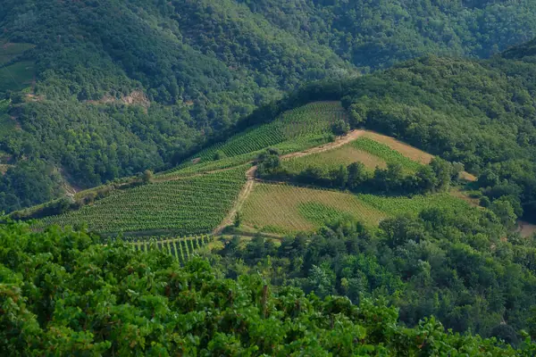

Home › Wine regions › Rhône Valley
Rhône Valley wine region

Photo: Elliot Gouy on Unsplash
Spicy reds in the north, blends in the south.
The benchmark for many wine styles, organized by appellation (AOC).
Notable producers in Rhône Valley
- E. Guigal
- M. Chapoutier
- Jean-Louis Chave
- Château de Beaucastel
- Paul Jaboulet Aîné
Official appellations
| Appellation | Status | Style | Grapes |
|---|---|---|---|
| Châteauneuf-du-Pape (1936) One of France's first AOCs, named after the popes' summer castle. Thirteen grape varieties are allowed; Grenache leads, often on large round galet stones. | AOC | Red | Garnacha / Grenache, Syrah / Shiraz, Mourvèdre |
Rhône Valley wines to try
E. Guigal Côtes du Rhône Rouge
Rhône Valley · Côtes du Rhône · Syrah / Shiraz, Garnacha / Grenache, Mourvèdre
Generous and peppery: dark berries, spice and soft tannins.
Food: Sausages, cassoulet, pizza
Château de Beaucastel Châteauneuf-du-Pape Rouge
Rhône Valley · Châteauneuf-du-Pape · Mourvèdre, Garnacha / Grenache, Syrah / Shiraz
Deep and savoury: black fruit, garrigue herbs, leather and spice.
Food: Game, slow-cooked lamb
Paul Jaboulet Aîné Hermitage La Chapelle
Rhône Valley · Hermitage · Syrah / Shiraz
Powerful Syrah: blackberry, black olive, smoke and pepper.
Food: Venison, beef stew
Delas Frères Côtes-du-Rhône Blanc
Rhône Valley · Côtes du Rhône · Grenache Blanc, Viognier
Fresh southern Rhône white with peach and white flowers.
Food: Chicken, salads
Jean-Luc Jamet Côtes-du-Rhône Blanc
Rhône Valley · Côtes du Rhône · Viognier, Roussanne
Northern Rhône grower white: apricot, flowers and texture.
Food: Pork, fish
Château de Beaucastel Coudoulet de Beaucastel Blanc
Rhône Valley · Côtes du Rhône · Marsanne, Viognier, Bourboulenc, Clairette
Rich Rhône white: stone fruit, honeysuckle and almond.
Food: Roast chicken, bouillabaisse
Delas Frères Condrieu La Galopine
Rhône Valley · Condrieu · Viognier
Perfumed Condrieu: apricot, violet and a rich, smooth finish.
Food: Asian dishes, lobster
Domaine Jean-Louis Chave Hermitage Blanc
Rhône Valley · Hermitage · Marsanne, Roussanne
Legendary Hermitage white: rich, honeyed, nutty and age-worthy.
Food: Lobster, truffle
Domaine Jamet Côte-Rôtie
Rhône Valley · Côte-Rôtie · Syrah
Benchmark grower Côte-Rôtie: olive, violet and smoked meat.
Food: Lamb, game
E. Guigal Côte-Rôtie La Turque
Rhône Valley · Côte-Rôtie · Syrah, Viognier
One of Guigal's 'La La' single vineyards: opulent and spicy.
Food: Venison, beef
E. Guigal Côte-Rôtie La Mouline
Rhône Valley · Côte-Rôtie · Syrah, Viognier
Perfumed, silky 'La La' from the Côte Blonde.
Food: Lamb, duck
E. Guigal Côte-Rôtie La Landonne
Rhône Valley · Côte-Rôtie · Syrah
Pure Syrah 'La La': dark, dense and structured.
Food: Game, beef
L. Fayolle Crozes-Hermitage Sens
Rhône Valley · Crozes-Hermitage · Syrah
Fresh, peppery Crozes Syrah.
Food: Grilled meats, sausages
Delas Frères Crozes-Hermitage Domaine des Grands Chemins
Rhône Valley · Crozes-Hermitage · Syrah
Rich Crozes with blackberry, pepper and spice.
Food: Lamb, beef
Domaine de la Charbonnière Châteauneuf-du-Pape
Rhône Valley · Châteauneuf-du-Pape · Grenache, Syrah, Mourvèdre
Ripe, spicy Châteauneuf with garrigue notes.
Food: Lamb, game
Delas Frères Châteauneuf-du-Pape Haute Pierre
Rhône Valley · Châteauneuf-du-Pape · Grenache, Syrah
Generous Châteauneuf: kirsch, spice and herbs.
Food: Beef stew, lamb
Château de Beaucastel Hommage à Jacques Perrin
Rhône Valley · Châteauneuf-du-Pape · Mourvèdre, Grenache, Syrah
Beaucastel's Mourvèdre-rich prestige cuvée, made only in great years.
Food: Game, truffle
Domaine Raspail-Ay Gigondas
Rhône Valley · Gigondas · Grenache, Syrah, Mourvèdre
Traditional, sturdy Gigondas.
Food: Lamb, stews
Château de Saint Cosme Gigondas
Rhône Valley · Gigondas · Grenache, Syrah, Mourvèdre
Spicy, mineral Gigondas from limestone.
Food: Game, beef
Domaine de la Charbonnière Vacqueyras
Rhône Valley · Vacqueyras · Grenache, Syrah
Dark-fruited, peppery Vacqueyras.
Food: Lamb, sausages
Xavier Vignon Côtes-du-Rhône
Rhône Valley · Côtes du Rhône · Grenache, Syrah
Juicy, spicy Côtes-du-Rhône.
Food: Pizza, burgers
Château de Beaucastel Coudoulet de Beaucastel Rouge
Rhône Valley · Côtes du Rhône · Grenache, Mourvèdre, Syrah
'Baby Beaucastel': ripe, spicy and savoury.
Food: Lamb, stews
Château Mourgues du Grès Les Galets Rouges
Rhône Valley · Costières de Nîmes · Syrah, Grenache
Fresh, fruity Costières red.
Food: Grilled meats, pizza
Domaine Coursodon Grenade Syrah
Rhône Valley · Vin de France · Syrah
Young, juicy Syrah from a Saint-Joseph grower.
Food: Charcuterie, burgers
Domaine des Bernardins Muscat de Beaumes de Venise
Rhône Valley · Muscat de Beaumes de Venise · Muscat Blanc à Petits Grains
Fortified Muscat: orange blossom, apricot and honey.
Food: Fruit desserts
More wine regions in France
See Rhône Valley on the wine map
The Wine Reference newsletter
New wines, stories and career guides, one email a week at most.
Over 18s only. Unsubscribe any time with one click. Your email is stored securely by Kit and never shared.
Support The Wine Reference
This guide is free, with no paywall. If it helped you choose a bottle, you can buy me a glass and keep it growing.
🍷 Buy me a glass